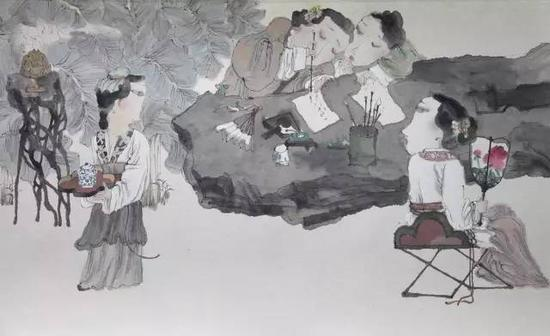

文/林立
Thursday, May 30, 2010
檀社介紹
檀社是邱菽園、釋瑞于等新加坡詩人在上世紀二十年代組成的詩社， 其唱酬活動既承襲了傳統社課的模式，又以報章作為發表作品的新渠道，及後又出版了當時的唯一一部社課作品集《檀榭詩集》。 該社之成立，雖然帶有濃厚的佛教色彩，但唱酬內容卻包含本地題材與家國之思。 社友均是來自中國的流寓者，背景容有不同，卻在新加坡這一英國殖民地組成一「有情的共同體」， 以舊體詩呼應彼此的宗教信仰、異地情懷與文學趣味，充份體現了傳統詩學中「詩可以群」的概念。
瀏覽更多